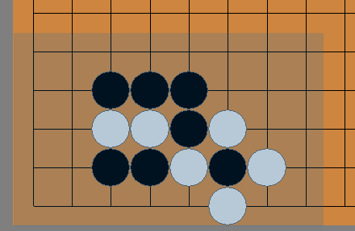

棋譜フォルダに入っている katago-rating-games の中から棋譜を検索するためのツールです。
碁盤の左側にある棋譜リストから棋譜を選択すると閲覧できます。ホイール操作で前後に手順を進めることが可能です。
棋譜リストボックスの下のスピンボックスは、棋譜を選択した際に何手目から表示を開始するかを設定します。
検索結果の下のスピンボックスは、検索結果の棋譜を選択した際に、マッチした局面の前後何手目を表示するかを設定します。
KataGoエンジンの形勢判断が背景の色で表示されます（グレーは互角を示します）。
これは最後に着手した側のエンジンの判断です。例えば、最終手マークが白石についている場合、背景の色は白側のエンジンの判断を示しています。
「検索」ボタンをクリックすると検索が開始されます。
- もう一つのリストボックスに検索結果が表示されますので、クリックして閲覧してください。
- 石が取られる局面を通過した局面を検索したい場合は、抜き跡に石を置いて検索してください。
「除外検索」ボタンは、現在の検索結果を除いた全ての棋譜から検索を行います。
「絞込検索」ボタンは、現在の検索結果の中からさらに絞り込んで検索を行います。
「厳密検索」について
純粋にその局面が登場したかを判定するモードになります。
- 抜き跡にさらに着手があった局面も検索可能です。
- この検索方法は処理が遅いため、非推奨です！
- ※「×石」の使用には対応していません。
- ※ グルーピングに対応していません。
- ※ 手順検索に対応していません。
「反転検索」について
- マッチしなかった棋譜が結果に追加されるようになります。
- 全ての検索方式に対応しています。
- ※検索結果に、位置ジャンプ情報が含まれません。主にフィルター用途としてご活用ください。
★◇★ こういう時はどうやって検索する？
例１：【黒星、白カカリのあと、どこかにハサんだ局面を検索したい】
ハサミの候補位置全てに黒石を置き、それらをグループ化して検索します。

※画像は開発中の画面です。現バージョンとは異なる場合があります。
例２：【ある局面で、次の一手が打たれなかった局面を検索したい】
- まず、次の一手を打った局面を検索します。
- そのあと一手戻して、「除外検索」を実行します。
このようにすれば、ある局面で、次にその手を打たなかった棋譜だけを効率的に抽出できます。
例３：【抜き跡を含む局面が検索できない・・・】
例えば以下のような局面ですが、手順中、黒石が１個白に取られています。

その場合は編集モードで以下のように取られた場所の黒石を追加した状態で検索してください。

抜き跡にさらに着手したような局面の検索は「厳密検索」をご利用ください。
★☆SGF取得機能☆★
- 選択中の棋譜をクリップボードにコピーします。
Ctrl + 左クリックで複数の棋譜を選択できます。Ctrl + Aで全ての棋譜を選択します。
複数選択されている場合、それらを全て（最大５０件)マージしたSGFがクリップボードにコピーされます。
保存ボタン： 次回起動時まで【save】フォルダ内に、sgfファイルとして保存します。ファイルとして利用したい場合にご活用ください。